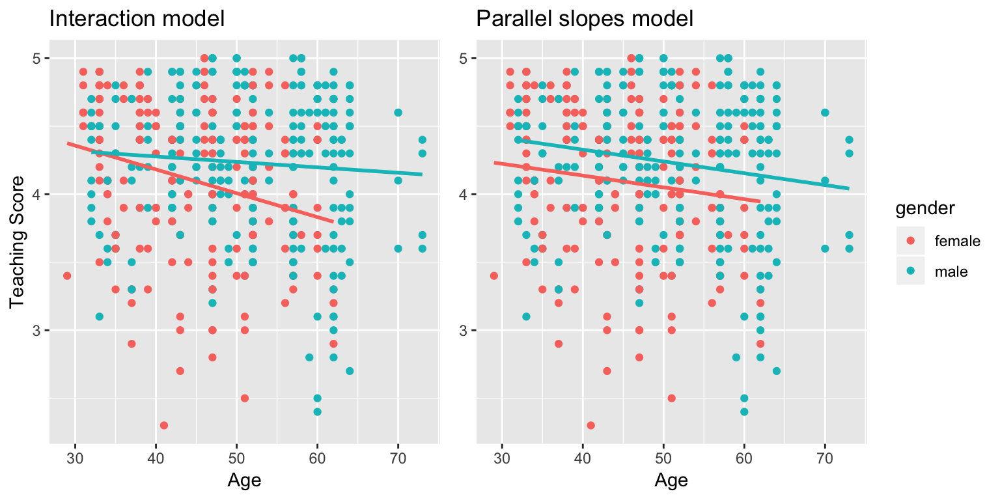

Chapter 7 Multiple Regression
In Chapter 6 we introduced ideas related to modeling for explanation, in particular that the goal of modeling is make explicit the relationship between some outcome variable \(y\) and some explanatory variable \(x\). While there are many approaches to modeling, we focused on one particular technique: linear regression, one of the most commonly-used and easy-to-understand approaches to modeling. Furthermore to keep things simple we only considered models with one explanatory \(x\) variable that was either numerical in Section 6.1 or categorical in Section 6.2.
In this chapter on multiple regression we’ll start considering models that include more than one explanatory variable \(x\). You can imagine when trying to model a particular outcome variable, like teaching evaluation scores as in Section 6.1 or life expectancy as in Section 6.2, that it would be very useful to include more than just one explanatory variable’s worth of information.
Since our regression models will now consider more than one explanatory variable, the interpretation of the associated effect of any one explanatory variable must be made in conjunction with the other explanatory variables included in your model. Let’s begin!
Needed packages
Let’s load all the packages needed for this chapter (this assumes you’ve already installed them). Recall from our discussion in Section 5.4.1 that loading the tidyverse package by running library(tidyverse) loads the following commonly used data science packages all at once:
ggplot2for data visualizationdplyrfor data wranglingtidyrfor converting data to “tidy” formatreadrfor importing spreadsheet data into R- As well as the more advanced
purrr,tibble,stringr, andforcatspackages
If needed, read Section 2.3 for information on how to install and load R packages.
library(tidyverse)
library(moderndive)
library(skimr)
library(ISLR)7.1 One numerical & one categorical explanatory variable
Let’s revisit the instructor evaluation data we introduced in Section 6.1, where we studied the relationship between instructor evaluation scores (as given by students) and their “beauty” scores for instructors teaching courses at the UT Austin; the variable teaching score was a numerical outcome variable \(y\) and the variable beauty score bty_avg was a numerical explanatory \(x\) variable.
In this section we are going to consider a different model. Our outcome variable will still be teaching score, but now including two different explanatory variables: age and gender. Could it be that instructors who are older receive better teaching evaluations from students? Or could it instead be that younger instructors receive better evaluations? Are there differences in evaluations given by students for instructors of different genders? We’ll answer these questions by modeling the relationship between these variables using multiple regression where we have:
- A numerical outcome variable \(y\), as before the instructor’s teaching score and
- Two explanatory variables:
- A numerical explanatory variable \(x_1\), the instructor’s age
- A categorical explanatory variable \(x_2\), the instructor’s binary gender (male or female).
It is important to note that at the time of this study, due to then commonly held beliefs about gender, this variable was often recorded as a binary. While the results of a model that oversimplifies gender this way may be imperfect, we still found the results to be very pertinent and relevant today. An eminent statistician by the name George E.P. Box summarizes our thinking very nicely: “All models are wrong, but some are useful.”.
7.1.1 Exploratory data analysis
The data on the 463 courses at the UT Austin can be found in the evals data frame included in the moderndive package. However, to keep things simple, let’s select() only the subset of the variables we’ll consider in this chapter, and save this data in a new data frame called eval_ch7. Note that these are different than the variables chosen in Chapter 6.
evals_ch7 <- evals %>%
select(ID, score, age, gender)Recall the three common steps in an exploratory data analysis we saw in Section 6.1.1
- Looking at the raw data values.
- Computing summary statistics, like means, medians, and interquartile ranges.
- Creating data visualizations.
Let’s first look at the raw data values both either looking at evals_ch7 RStudio’s spreadsheet viewer or using the glimpse() function
glimpse(evals_ch7)Observations: 463
Variables: 4
$ ID <int> 1, 2, 3, 4, 5, 6, 7, 8, 9, 10, 11, 12, 13, 14, 15, 16, 17, 18,…
$ score <dbl> 4.7, 4.1, 3.9, 4.8, 4.6, 4.3, 2.8, 4.1, 3.4, 4.5, 3.8, 4.5, 4.…
$ age <int> 36, 36, 36, 36, 59, 59, 59, 51, 51, 40, 40, 40, 40, 40, 40, 40…
$ gender <fct> female, female, female, female, male, male, male, male, male, …Let’s also display a random sample of 5 rows of the 463 rows corresponding to different courses in Table ??. Remember due to the random nature of the sampling, you will likely end up with a different subset of 5 rows.
evals_ch7 %>%
sample_n(size = 5)Now that we’ve looked at the raw values in our evals_ch7 data frame and obtained a sense of the data, let’s move on to next common step in an exploratory data analysis: computing summary statistics. As we did in our exploratory data analyses in Sections 6.1.1 and 6.2.1 from the previous chapter, let’s use the skim() function from the skimr package, being sure to only select() the variables of interest of model:
evals_ch7 %>%
select(score, age, gender) %>%
skim()Skim summary statistics
n obs: 463
n variables: 3
── Variable type:factor ──────────────────────────────────────────────────────────────────
variable missing complete n n_unique top_counts ordered
gender 0 463 463 2 mal: 268, fem: 195, NA: 0 FALSE
── Variable type:integer ─────────────────────────────────────────────────────────────────
variable missing complete n mean sd p0 p25 p50 p75 p100 hist
age 0 463 463 48.37 9.8 29 42 48 57 73 ▅▅▅▇▅▇▂▁
── Variable type:numeric ─────────────────────────────────────────────────────────────────
variable missing complete n mean sd p0 p25 p50 p75 p100 hist
score 0 463 463 4.17 0.54 2.3 3.8 4.3 4.6 5 ▁▁▂▃▅▇▇▆Observe for example that we have no missing data, courses taught by 268 male vs 195 female instructors, and and average age of 48.37. Recall however that each row in our data represents a particular course and that instructors can teach more than one course. Therefore the average age of the unique instructors may differ.
Furthermore, let’s compute the correlation between our two numerical variables: score and age. Recall from Section 6.1.1 that correlation coefficients only exist between numerical variables. We observe that they are weakly negatively correlated.
evals_ch7 %>%
get_correlation(formula = score ~ age)# A tibble: 1 x 1
correlation
<dbl>
1 -0.107032Let’s now perform the last of the three common steps in an exploratory data analysis: creating data visualizations. Given that the outcome variable score and explanatory variable age are both numerical, we’ll use a scatterplot to display their relationship. How can we incorporate the categorical variable gender however? By mapping the variable gender to the color aesthetic and creating a colored scatterplot! The following code is very similar to the code that created the scatterplot of teaching score and beauty score in Figure 6.2, but with color = gender added to the aes().
ggplot(evals_ch7, aes(x = age, y = score, color = gender)) +
geom_point() +
labs(x = "Age", y = "Teaching Score", color = "Gender") +
geom_smooth(method = "lm", se = FALSE)
FIGURE 7.1: Colored scatterplot of relationship of teaching and beauty scores
In the resulting Figure 7.1, observe that ggplot assigns a default red/blue color scheme to the points and lines associated with each of the two levels of gender: female and male. Furthermore the geom_smooth(method = "lm", se = FALSE) layer automatically fits a different regression line for each group since we have provided color = gender in the aesthetic mapping. This allows for all subsequent geometries to have the same aesthetic mappings.
We notice some interesting trends:
- There are almost no women faculty over the age of 60 as evidenced by lack of red dots above \(x\) = 60.
- While both regression lines are negatively sloped with age (i.e. as instructor’s age, so also do they tend to receive lower teaching scores), the slope for age for the female instructors is more negative. In other words, the female instructors are paying a harsher penalty in their teaching scores then the male instructors do.
7.1.2 Interaction model
Let’s now quantify the relationship of our outcome variable \(y\) and two explanatory variables using one type of multiple regression model known as an “interaction model.” Unfortunately, we don’t have enough context at this point to explain where the term “interaction” comes from; we’ll explain why statisticians use this term at the end of this section.
In particular, we’ll write out the equation of the two regression lines in Figure 7.1 using the values from a regression table. Before we do this however, let’s go over a brief refresher of regression when you have a categorical explanatory variable \(x\).
Recall in Section 6.2.2 we fit a regression model for countries’ life expectancy as a function of which continent the country was in. In other words we had a numerical outcome variable \(y\) = lifeExp and a categorical explanatory variable \(x\) = continent which had 5 levels: Africa, Americas, Asia, Europe, and Oceania. Let’s redisplay the regression table you saw in Table ??:
Recall our interpretations of the estimate column. Since Africa was the “baseline for comparison” group since Africa comes first alphabetically, the intercept term corresponds to the mean life expectancy for all countries in Africa of 54.8 years. The other 4 values of estimate correspond to “offsets” relative to the baseline group. So for example, the “offset” corresponding to the Americas is +18.8 versus the baseline for comparison group Africa i.e. the average life expectancy for countries in the Americas is 18.8 years higher. Thus the mean life expectancy for all countries in the Americas is 54.8 + 18.8 = 73.6. The same interpretation holds for Asia, Europe, and Oceania.
Going to back to our multiple regression model for teaching score using age and gender in Figure 7.1, we generate the regression table using the same two step approach from Chapter 6: we first “fit” the model using the lm() “linear model” function and then we apply the get_regression_table() function. This time however our model formula won’t be of form y ~ x, but rather of form y ~ x1 * x2. In other words our two explanatory variables x1 and x2 are separated by a * sign:
# Fit regression model:
score_model_interaction <- lm(score ~ age * gender, data = evals_ch7)
# Get regression table:
get_regression_table(score_model_interaction)Looking the regression table output in Table ??, we see there are four rows of values in the estimate column. While it is not immediately apparent, using these four values we can write out the equations of both the red and blue lines in Figure 7.1. Let’s build these up.
First, since the word female is alphabetically before male, female instructors are the “baseline for comparison” group. Therefore intercept is the intercept and age is the slope for age for only the female instructors. In other words, the red regression line in Figure 7.1 has intercept 4.883 and slope for age of -0.018. Remember that for this particular data, while the intercept has a mathematical interpretation, it has no practical interpretation since there can’t be any instructors with age = 0.
What about the intercept and slope for age of the male instructors? In other words the blue line in Figure 7.1? This is where our notion of “offsets” comes into play once again. The value for gendermale of -0.446 is not the intercept for the male instructors, but rather the offset (or difference) in intercept for male instructors relative to female instructors. Therefore, the intercept for the male instructors is intercept + gendermale = 4.883 + (-0.446) = 4.883 - 0.446 = 4.437.
Similarly, age:gendermale = 0.014 is not the slope for age for the male instructors, but rather the offset (or difference) in slope for the male instructors. Therefore, the slope for age for the male instructors is age + age:gendermale = -0.018 + 0.014 = -0.004. Therefore the blue regression line in Figure 7.1 has intercept 4.437 and slope for age of -0.004.
Let’s summarize these values in Table ?? and focus on the two slopes for age:
Since the slope for age for the female instructors was -0.018, it means that for every additional year in age for female instructors, there is an associated decrease of on average 0.018 units in teaching score. For the male instructors however, the corresponding associated decrease was on average only 0.004 units. While both slopes for age were negative, the slope for age for the female instructors is more negative. This is consistent with our observation from Figure 7.1, that this model is suggesting female instructors are paying a heavier price for aging in the evaluations they receive from students.
Let’s now write the equation for our regression lines, which we can use to compute our fitted values \(\widehat{y} = \widehat{\text{score}}\).
\[ \begin{aligned} \widehat{y} = \widehat{\text{score}} &= b_0 + b_{\mbox{age}} \cdot \mbox{age} + b_{\mbox{male}} \cdot \mathbb{1}_{\mbox{is male}}(x) + b_{\mbox{age,male}} \cdot \mbox{age} \cdot \mathbb{1}_{\mbox{is male}}\\ &= 4.883 -0.018 \cdot \mbox{age} - 0.446 \cdot \mathbb{1}_{\mbox{is male}}(x) + 0.014 \cdot \mbox{age} \cdot \mathbb{1}_{\mbox{is male}} \end{aligned} \]
Whoa! That’s even more daunting than the equation you saw for the life expectancy as a function of continent in Section 6.2.2! However if you recall what an “indicator function” AKA “dummy variable” does, the equation simplifies greatly. In the above equation, we have one indicator function of interest:
\[ \mathbb{1}_{\mbox{is male}}(x) = \left\{ \begin{array}{ll} 1 & \text{if } \text{instructor } x \text{ is male} \\ 0 & \text{otherwise}\end{array} \right. \]
Second, let’s match coefficients in the above equation with values in the estimate column in our regression table in Table ??:
- \(b_0\) is the
intercept= 4.883 for the female instructors - \(b_{\mbox{age}}\) is the slope for
age= -0.018 for the female instructors - \(b_{\mbox{male}}\) is the offset in intercept for the male instructors
- \(b_{\mbox{age,male}}\) is the offset in slope for age for the male instructors
Let’s put this all together and compute the fitted value \(\widehat{y} = \widehat{\text{score}}\) for female instructors. Since for female instructors \(\mathbb{1}_{\mbox{is male}}(x)\) = 0, the above equation becomes
\[ \begin{aligned} \widehat{y} = \widehat{\text{score}} &= b_0 + b_{\mbox{age}} \cdot \mbox{age} + b_{\mbox{male}} \cdot \mathbb{1}_{\mbox{is male}}(x) + b_{\mbox{age,male}} \cdot \mbox{age} \cdot \mathbb{1}_{\mbox{is male}}\\ &= 4.883 - 0.018 \cdot \mbox{age} - 0.446 \cdot \mathbb{1}_{\mbox{is male}}(x) + 0.014 \cdot \mbox{age} \cdot \mathbb{1}_{\mbox{is male}}\\ &= 4.883 - 0.018 \cdot \mbox{age} - 0.446 \cdot 0 + 0.014 \cdot \mbox{age} \cdot 0\\ &= 4.883 - 0.018 \cdot \mbox{age} - 0 + 0\\ &= 4.883 - 0.018 \cdot \mbox{age}\\ \end{aligned} \]
which is the equation of the red regression line in Figure 7.1 corresponding to the female instructors. Correspondingly, since for male instructors \(\mathbb{1}_{\mbox{is male}}(x)\) = 1, the above equation becomes
\[ \begin{aligned} \widehat{y} = \widehat{\text{score}} &= 4.883 - 0.018 \cdot \mbox{age} - 0.446 \cdot \mathbb{1}_{\mbox{is male}}(x) + 0.014 \cdot \mbox{age} \cdot \mathbb{1}_{\mbox{is male}}\\ &= 4.883 - 0.018 \cdot \mbox{age} - 0.446 \cdot 1 + 0.014 \cdot \mbox{age} \cdot 1\\ &= 4.883 - 0.018 \cdot \mbox{age} - 0.446 + 0.014 \cdot \mbox{age}\\ &= (4.883 - 0.446) + (- 0.018 + 0.014) * \mbox{age}\\ &= 4.437 - 0.004 \cdot \mbox{age}\\ \end{aligned} \]
which is the equation of the blue regression line in Figure 7.1 corresponding to the male instructors.
Phew! That was a lot of arithmetic! Don’t fret however, this is as hard as modeling will get in this book. If you’re still a little unsure about using indicator functions and using categorical explanatory variables, we highly suggest you re-read Section 6.2.2 which involves only a single categorical explanatory variable and thus is much simpler.
Before we end this section, we explain why we refer to this type of model as an “interaction model.” The \(b_{\mbox{age,male}}\) term in the equation for the fitted value \(\widehat{y}\) = \(\widehat{\text{score}}\) is what’s known in statistical modeling as an “interaction effect.” The interaction term corresponds to the age:gendermale = 0.014 in the final row of the regression table in Table ??.
We say there is an interaction effect if the associated effect of one variable depends on the value of another variable, in other words the two variables are “interacting.” In our case, the associated effect of the variable age depends on the value of another variable, gender. This was evidenced by the difference in slopes for age of +0.014 of male instructors relative to female instructors.
Another way of thinking of interaction effects is as follows. For a given instructor at the UT Austin, there might be an associated effect of their age on their teaching scores, there might be an associated effect of the gender on their teaching scores, but when put together, there might an additional effect due to the intersection of their age and their gender.
7.1.3 Parallel slopes model
When creating regression models with one numerical and one categorical explanatory variable, we are not just limited to interaction models as we just saw. Another type of model we can use is known as the “parallel slopes” model. Unlike with interaction models where the regression line can have both different intercepts and different slopes, parallel slopes models still allow for different intercepts but force all lines to have the same slope. The resulting regression lines are thus parallel. Let’s visualize the best fitting parallel slopes model to our evals_ch7 data.
Unfortunately, the ggplot2 package does not have a convenient way to plot a parallel slopes model. We therefore created our own function gg_parallel_slopes() and included it in the moderndive package:
gg_parallel_slopes(y = "score", num_x = "age", cat_x = "gender",
data = evals_ch7)FIGURE 7.2: Parallel slopes model of relationship of score with age and gender.
Note the arguments i.e. inputs to this function: the outcome variable y = "score", the numerical explanatory variable num_x = "age", the categorical explanatory variable cat_x = "gender", and the data frame that includes this data = evals_ch7. Be careful to include the quotation marks when specifying all variables, something you don’t have to do when creating a visualization with ggplot().
Observe in Figure 7.2 that we now have parallel red and blue lines corresponding to the female and male instructors respectively, in other words they have the same negative slope. In other words, as instructors age, so also do they tend to receive lower teaching evaluation scores from students. However these two lines have different intercepts as evidenced by the fact that the blue line corresponding to the male instructors is higher than the red line corresponding to the female instructors.
In order to obtain the precise numerical values of the intercepts and the common slope, we once again first “fit” the model using the lm() “linear model” function and then we apply the get_regression_table() function. However, unlike the interaction model which had a model formula of form y ~ x1 * x2, our model formula is now of form y ~ x1 + x2. In other words our two explanatory variables x1 and x2 are separated by a + sign:
# Fit regression model:
score_model_parallel_slopes <- lm(score ~ age + gender, data = evals_ch7)
# Get regression table:
get_regression_table(score_model_parallel_slopes)Similarly to the regression table for the interaction model from our earlier Table ??, we have an intercept term corresponding to the intercept for the “baseline for comparison” female instructor group and a gendermale term corresponding to the offset (or difference) in intercept for the male instructors relative to female instructors. In other words in Figure 7.2 the red regression line corresponding to the female instructors has an intercept of 4.484 while the blue regression line corresponding to the male instructors has an intercept of 4.484 + 0.191 = 4.67. Once again, since there aren’t any instructors of age 0, the intercepts only have a mathematical interpretation but no practical one.
Unlike in Table ?? we now only have a single term relating to the slope for age as we’ve forced both the female and male instructors to have a common slope for age of -0.009. In other words, for every increase of 1 year in instructor age, we observe an associated decrease of on average 0.009 units in teaching for both the female and male instructor.
Let’s now write the equation for our regression lines, which we can use to compute our fitted values \(\widehat{y} = \widehat{\text{score}}\).
\[ \begin{aligned} \widehat{y} = \widehat{\text{score}} &= b_0 + b_{\mbox{age}} \cdot \mbox{age} + b_{\mbox{male}} \cdot \mathbb{1}_{\mbox{is male}}(x)\\ &= 4.484 -0.009 \cdot \mbox{age} + 0.191 \cdot \mathbb{1}_{\mbox{is male}}(x) \end{aligned} \]
Let’s put this all together and compute the fitted value \(\widehat{y} = \widehat{\text{score}}\) for female instructors. Since for female instructors \(\mathbb{1}_{\mbox{is male}}(x)\) = 0, the above equation becomes
\[ \begin{aligned} \widehat{y} = \widehat{\text{score}} &= b_0 + b_{\mbox{age}} \cdot \mbox{age} + b_{\mbox{male}} \cdot \mathbb{1}_{\mbox{is male}}(x)\\ &= 4.484 -0.009 \cdot \mbox{age} + 0.191 \cdot \mathbb{1}_{\mbox{is male}}(x)\\ &= 4.484 -0.009 \cdot \mbox{age} + 0.191 \cdot 0\\ &= 4.484 -0.009 \cdot \mbox{age} \end{aligned} \]
which is the equation of the red regression line in Figure 7.2 corresponding to the female instructors. Correspondingly, since for male instructors \(\mathbb{1}_{\mbox{is male}}(x)\) = 1, the above equation becomes
\[ \begin{aligned} \widehat{y} = \widehat{\text{score}} &= b_0 + b_{\mbox{age}} \cdot \mbox{age} + b_{\mbox{male}} \cdot \mathbb{1}_{\mbox{is male}}(x)\\ &= 4.484 -0.009 \cdot \mbox{age} + 0.191 \cdot \mathbb{1}_{\mbox{is male}}(x)\\ &= 4.484 -0.009 \cdot \mbox{age} + 0.191 \cdot 1\\ &= (4.484 + 0.191) - 0.009 \cdot \mbox{age}\\ &= 4.67 -0.009 \cdot \mbox{age} \end{aligned} \]
which is the equation of the blue regression line in Figure 7.2 corresponding to the male instructors.
Great! We’ve considered both an interaction model and a parallel slopes model for our data. Let’s compare the visualizations for both models side-by-side in Figure 7.3

FIGURE 7.3: Comparison of interaction and parallel slopes models.
At this point, you might be asking yourself: “Why would we ever use an parallel slopes model?” Looking at the left-hand plot in Figure 7.3, the two lines definitely do not appear to be parallel, so why would we force them to be parallel as in the right-hand plot?" For this data, we agree! It can easily be argued that the interaction model is more appropriate. However, in Section 7.3.1 below on model selection, we’ll present an example where it can be argued that the case for a parallel slopes model might be stronger.
7.1.4 Observed/fitted values and residuals
For brevity’s sake, in this section we’ll only compute the observed values, fitted values, and residuals for the interaction model which we saved in score_model_interaction. You’ll have an opportunity to study these values for our parallel slopes model in the upcoming Learning Check.
Say you have a professor who is female and is 36 years old? What fitted value \(\widehat{y}\) = \(\widehat{\text{score}}\) would our model yield? Say you have another professor who is male and is 59 years old? What would their fitted value \(\widehat{y}\) be? We answer this question visually by finding the intersection of the red regression line and a vertical line at \(x\) = age = 36; we mark this value with a large red dot in Figure 7.4. Similarly we can identify the fitted value \(\widehat{y}\) = \(\widehat{\text{score}}\) for the male instructor by finding the intersection of the blue regression line and a vertical line at \(x\) = age = 59; we mark this value with a large blue dot in Figure 7.4.
FIGURE 7.4: Fitted values for two new professors
However, what are these values precisely? We can use the equations of the two regression lines we computed in Section 7.1.2, which in turn were based on values from the regression table in Table ??:
- For all female instructors: \(\widehat{y} = \widehat{\text{score}} = 4.883 - 0.018 \cdot \mbox{age}\)
- For all male instructors: \(\widehat{y} = \widehat{\text{score}} = 4.437 - 0.004 \cdot \mbox{age}\)
So our fitted values would be: 4.883 - 0.018 \(\cdot\) 36 = 4.25 and 4.437 - 0.004 \(\cdot\) 59 = 4.20 respectively. What if however we wanted the fitted values not just for these two instructors, but the instructors for all 463 courses? Doing this by hand would be long and tedious! This is where the get_regression_points() function from the moderndive package can help: it will quickly automate this for all 463 courses. We present the results in Table ??.
regression_points <- get_regression_points(score_model_interaction)
regression_pointsIn fact, it turns out that the female instructor of age 36 taught the first four courses while the male instructor taught the next 3. The resulting \(\widehat{y}\) = \(\widehat{\text{score}}\) fitted values are in the score_hat column. Furthermore, get_regression_points() function also returns the residuals \(y-\widehat{y}\). Notice for example the first and fourth courses the female instructor of age 36 taught had positive residuals, indicating that the actual teaching score they received from students was less than their fitted score of 4.25. On the other hand the second and third course this instructor taught had negative residuals, indicating that the actual teaching score they received from students was more than their fitted score of 4.25.
Learning check
(LC7.1) Compute the observed values, fitted values, and residuals not for the interaction model as we just did, but rather for the parallel slopes model we saved in score_model_interaction.
7.2 Two numerical explanatory variables
Let’s now switch gears and consider multiple regression models where instead of one numerical and one categorical explanatory variable, we have two numerical explanatory variables! The dataset we’ll use is from An Introduction to Statistical Learning with Applications in R (ISLR), an intermediate-level textbook on statistical and machine learning. It’s accompanying ISLR R package contains datasets that the authors apply various machine learning methods to.
One frequently used dataset in this book Credit dataset, where the outcome variable of interest is the credit card debt, in other words credit card debt, of 400 individuals. Other variables like income, credit limit, credit rating, and age are included as well. Note that the Credit data is not based on real individuals’ financial information, but rather is a simulated dataset used for educational purposes.
In this section, we’ll fit a regression model where we have
- A numerical outcome variable \(y\), the cardholder’s credit card debt
- Two explanatory variables:
- One numerical explanatory variable \(x_1\), the cardholder’s credit limit
- Another numerical explanatory variable \(x_2\), the cardholder’s income (in thousands of dollars).
In the forthcoming Learning Checks, we’ll consider a different regression model
- The same numerical outcome variable \(y\), the cardholder’s credit card debt
- Two different explanatory variables:
- One numerical explanatory variable \(x_1\), the cardholder’s credit rating
- Another numerical explanatory variable \(x_2\), the cardholder’s age.
7.2.1 Exploratory data analysis
Let’s load the Credit data but to keep things simple to keep things simple, let’s select() only the subset of the variables we’ll consider in this chapter, and save this data in a new data frame called credit_ch7. Notice our slightly different use of the select() verb here: we’ll select the Balance variable from Credit for example, but we’ll save it with a new variable name debt since this name is a little easier to understand.
library(ISLR)
credit_ch7 <- Credit %>%
as_tibble() %>%
select(ID, debt = Balance, credit_limit = Limit,
income = Income, credit_rating = Rating, age = Age)You can observe the effect of our different use of the select() verb in the first common step of an EDA: looking at the raw values either in RStudio’s spreadsheet viewer or by using the glimpse()
glimpse(credit_ch7)Observations: 400
Variables: 6
$ ID <int> 1, 2, 3, 4, 5, 6, 7, 8, 9, 10, 11, 12, 13, 14, 15, 16, …
$ debt <int> 333, 903, 580, 964, 331, 1151, 203, 872, 279, 1350, 140…
$ credit_limit <int> 3606, 6645, 7075, 9504, 4897, 8047, 3388, 7114, 3300, 6…
$ income <dbl> 14.9, 106.0, 104.6, 148.9, 55.9, 80.2, 21.0, 71.4, 15.1…
$ credit_rating <int> 283, 483, 514, 681, 357, 569, 259, 512, 266, 491, 589, …
$ age <int> 34, 82, 71, 36, 68, 77, 37, 87, 66, 41, 30, 64, 57, 49,…Furthermore, let’s look at a random sample of 5 out of the 400 credit card holders in Table ??. Note due to the random nature of the sampling, you will likely end up with a different subset of 5 rows.
credit_ch7 %>%
sample_n(size = 5)Now that we’ve looked at the raw values in our credit_ch7 data frame and obtained a sense of the data, let’s move on to next common step in an exploratory data analysis: computing summary statistics. As you’re probably used to now, let’s use the skim() function from the skimr package, being sure to only select() the columns of interest for our model:
Let’s look at some summary statistics, again using the skim() function from the skimr package:
credit_ch7 %>%
select(debt, credit_limit, income) %>%
skim()Skim summary statistics
n obs: 400
n variables: 3
── Variable type:integer ─────────────────────────────────────────────────────────────────
variable missing complete n mean sd p0 p25 p50 p75
credit_limit 0 400 400 4735.6 2308.2 855 3088 4622.5 5872.75
debt 0 400 400 520.01 459.76 0 68.75 459.5 863
p100 hist
13913 ▅▇▇▃▂▁▁▁
1999 ▇▃▃▃▂▁▁▁
── Variable type:numeric ─────────────────────────────────────────────────────────────────
variable missing complete n mean sd p0 p25 p50 p75 p100
income 0 400 400 45.22 35.24 10.35 21.01 33.12 57.47 186.63
hist
▇▃▂▁▁▁▁▁Observe for example:
- The mean and median credit card debt are $520.01 and $459.50 respectively.
- 25% of card holders had debts of $68.75 or less.
- The mean and median credit card limit are $4735.6 and $4622.50 respectively.
- 75% of these card holders had incomes of $57,470 or less.
Since our outcome variable debt and the explanatory variables credit_limit and income are numerical, we can compute the correlation coefficient between pairs of these variables. First, we could run the get_correlation() command as seen in Subsection 6.1.1 twice, once for each explanatory variable:
credit_ch7 %>%
get_correlation(debt ~ credit_limit)
credit_ch7 %>%
get_correlation(debt ~ income)Or we can simultaneously compute them by returning a correlation matrix which we display in Table ??. We can read off the correlation coefficient for any pair of variables by looking them up in the appropriate row/column combination.
credit_ch7 %>%
select(debt, credit_limit, income) %>%
cor()For example, the correlation coefficient of:
debtwith itself is 1 as we would expect based on the definition of the correlation coefficient.debtwithcredit_limitis 0.862. This indicates a strong positive linear relationship, which makes sense as only individuals with large credit limits can accrue large credit card debts.debtwithincomeis 0.464. This is suggestive of another positive linear relationship, although not as strong as the relationship betweendebtandcredit_limit.- As an added bonus, we can read off the correlation coefficient between the two explanatory variables,
credit_limitandincomeof 0.792.
Let’s visualize the relationship of the outcome variable with each of the two explanatory variables in two separate plots:
ggplot(credit_ch7, aes(x = credit_limit, y = debt)) +
geom_point() +
labs(x = "Credit limit (in $)", y = "Credit card debt (in $)",
title = "Debt and credit limit") +
geom_smooth(method = "lm", se = FALSE)
ggplot(credit_ch7, aes(x = income, y = debt)) +
geom_point() +
labs(x = "Income (in $1000)", y = "Credit card debt (in $)",
title = "Debt and income") +
geom_smooth(method = "lm", se = FALSE)
FIGURE 7.5: Relationship between credit card debt and credit limit/income
Observe there is a positive relationship between credit limit and credit card debt: as credit limit increases so also does credit card debt. This is consistent with the strongly positive correlation coefficient of 0.862 we computed earlier. In the case of income, the positive relationship doesn’t appear as strong, given the weakly positive correlation coefficient of 0.464.
However the two plots in Figure 7.5 only focus on the relationship of the outcome variable with each of the two explanatory variables separately. To get a sense of the joint relationship of all three variables simultaneously through a visualization, we need a 3-dimensional (3D) scatterplot where for all 400 points we have
- The numerical outcome variable \(y\)
debtis on the z-axis (the vertical axis) - The two numerical explanatory variables form the axes on the bottom:
- The first numerical explanatory variable \(x_1\)
income - The second numerical explanatory variable \(x_2\)
credit_limit
- The first numerical explanatory variable \(x_1\)
Furthermore, we also include a regression plane. In the case of regression models with a single numerical explanatory variable, we’ve seen in Section 6.3.2 that the regression line is “best fitting” in that of all possible lines we can draw through a cloud of points, it minimizes the sum of squared residuals. This concept now extends to when we have two numerical explanatory variables, only now we have a “best fitting” plane that cuts through the cloud of points that similarly minimizes the sum of squared residuals.
Click on the following image to open an interactive version of this plot in your browser:
Learning check
(LC7.2) Conduct a new exploratory data analysis with the same outcome variable \(y\) being debt but with credit_rating and age as the new explanatory variables \(x_1\) and \(x_2\). Remember, this involves three things:
- Most crucially: Looking at the raw data values.
- Computing summary statistics, like means, medians, and interquartile ranges.
- Creating data visualizations.
What can you say about the relationship between a credit card holder’s debt and their credit rating and age?
7.2.2 Regression plane
Let’s now fit a regression model and get the regression table corresponding to the regression plane above. For simplicity’s sake, we won’t consider the two numerical explanatory variable analogue of the interaction model from Section 7.1.2 which we fit with a model formula of the form y ~ x1 * x2, but rather only regression models with model formula of the form y ~ x1 + x2. Somewhat confusing however, since we now have a regression plane instead of multiple lines, the label “parallel slopes model” doesn’t apply when you have two numerical explanatory variables.
Just as we have done multiple times throughout Chapters 6 and this chapter, let’s obtain the regression table for this model using our two-step process and display the results in Table ??
- We first “fit” the linear regression model using the
lm(y ~ x1 + x2, data)function and save it indebt_model. - We get the regression table by applying the
get_regression_table()from themoderndivepackage todebt_model.
# Fit regression model:
debt_model <- lm(debt ~ credit_limit + income, data = credit_ch7)
# Get regression table:
get_regression_table(debt_model)How do we interpret the three values in the estimate column?
intercept= -$385.18 (rounded to two decimal points). The intercept in our case represents the credit card debt for an individual who hascredit_limitof $0 andincomeof $0. In our data however, the intercept has limited practical interpretation since no individuals hadcredit_limitorincomevalues of $0. Rather, the intercept is used to situate the regression plane in 3D space.credit_limit= $0.26. Taking into account all other the explanatory variables in our model, for every increase of one dollar incredit_limit, there is an associated increase of on average $0.26 in credit card debt. Note:- Just as we did in Subsection 6.1.2, we are cautious not to make a causal statement by merely stating there there was an associated increase.
- We preface our interpretation with the statement “taking into account all other the explanatory variables in our model”, here
income, to emphasize that we are now jointly interpreting the associated effect of multiple explanatory variables in the same model at once.
income= -$7.66. Taking into account all other the explanatory variables in our model, for every increase of one unit in the variableincome, in other words $1000 in actual income, there is an associated decrease of on average $7.66 in credit card debt.
Putting these results together, the equation of the regression plane that gives us fitted values \(\widehat{y}\) = \(\widehat{\text{debt}}\).
\[ \begin{aligned} \widehat{y} &= b_0 + b_1 \cdot x_1 + b_2 \cdot x_2\\ \widehat{\text{debt}} &= b_0 + b_{\text{limit}} \cdot \text{limit} + b_{\text{income}} \cdot \text{income}\\ &= -387.179 + 0.263 \cdot\text{limit} - 7.663 \cdot\text{income} \end{aligned} \]
Recall in the right-hand plot of Figure 7.5 that when plotting the relationship between debt and income in isolation, there appeared to be a positive relationship. In the above multiple regression however, when jointly modeling the relationship between debt, credit_limit, and income, there appears to be a negative relationship of debt and income as evidenced by the negative slope for income of -$7.66. What explains these contradictory results? A phenomenon known as Simpson’s Paradox whereby overall trends that exist in aggregate either disappear or reverse when the data are broken down into groups. In Subsection 7.3.3 we elaborate on this by looking at the relationship between credit_limit and credit card debt, but split by different income brackets.
Learning check
(LC7.3) Fit a new simple linear regression using lm(debt ~ credit_rating + age, data = credit_ch7) where credit_rating and age are the new numerical explanatory variables \(x_1\) and \(x_2\). Get information about the “best-fitting” regression plane from the regression table by applying the get_regression_table() function. How do the regression results match up with the results from your exploratory data analysis above?
7.2.3 Observed/fitted values and residuals
Let’s also compute all fitted values and residuals for our regression model using the get_regression_points() function and present only the first 10 rows of output in Table ??. Remember that the (x, y, z) coordinates of each of the blue points in our 3D scatterplot can be found in the income, credit_limit, and debt columns. The fitted values on the regression plane are found in the debt_hat column and are computed using our equation for the regression plane in the previous section:
\[ \begin{aligned} \widehat{y} = \widehat{\text{debt}} &= -387.179 + 0.263 \cdot \text{limit} - 7.663 \cdot \text{income} \end{aligned} \]
regression_points <- get_regression_points(debt_model)
regression_points7.3 Related topics
7.3.1 Model selection
When do we use an interaction model versus a parallel slopes model? Recall in Sections 7.1.2 and 7.1.3 we fit both interaction and parallel slopes models for the outcome variable \(y\) teaching score using a numerical explanatory variable \(x_1\) age and a categorical explanatory variable \(x_2\) gender. We compared these models in Figure 7.3, which we display again below.

A lot of you might have asked yourselves: “Why would I force the lines to have parallel slopes (as seen in the right-hand plot) when they clearly have different slopes (as seen in the left-hand plot).”
The answer lies in a philosophical principle known as “Occam’s Razor” which states that “all other things being equal, simpler solutions are more likely to be correct than complex ones.” When viewed in a modeling framework, Occam’s Razor can be recast as “all other things being equal, simpler models are to be preferred over complex ones.” In other words, we should only favor the more complex model if the additional complexity is warranted.
Let’s revisit the equations for the regression line for both the interaction and parallel slopes model:
\[ \begin{aligned} \text{Interaction} &: \widehat{y} = \widehat{\text{score}} = b_0 + b_{\mbox{age}} \cdot \mbox{age} + b_{\mbox{male}} \cdot \mathbb{1}_{\mbox{is male}}(x) + \\ & \qquad b_{\mbox{age,male}} \cdot \mbox{age} \cdot \mathbb{1}_{\mbox{is male}}\\ \text{Parallel slopes} &: \widehat{y} = \widehat{\text{score}} = b_0 + b_{\mbox{age}} \cdot \mbox{age} + b_{\mbox{male}} \cdot \mathbb{1}_{\mbox{is male}}(x) \end{aligned} \]
The interaction model is “more complex” in that there is an additional \(b_{\mbox{age,male}} \cdot \mbox{age} \cdot \mathbb{1}_{\mbox{is male}}\) element to the equation not present for the parallel slopes model. Or viewed alternatively, the regression table for the interaction model in Table ?? has four rows, whereas the regression table for the parallel slopes model in Table ?? has three rows. The question becomes: “Is this additional complexity warranted?” In this case, it can be argued that it is.
However, let’s consider an example where it might not be. Let’s consider the MA_schools data which contains 2017 data on Massachusetts public high schools provided by Massachusetts Department of Education; read the help file for this data by running ?MA_schools if you would like more details. Let’s model
- A numerical outcome variable \(y\), average SAT math score for that high school
- Two explanatory variables:
- A numerical explanatory variable \(x_1\), the percentage of that high school’s student body that are economically disadvantaged
- A categorical explanatory variable \(x_2\), the school size as measured by enrollment: small (13-341 students), medium (342-541 students), and large (542-4264 students)
Let’s create visualizations of both the interaction and parallel slopes model once again and display the output in Figure 7.6.
# Interaction model
ggplot(MA_schools, aes(x = perc_disadvan, y = average_sat_math, color = size)) +
geom_point(alpha = 0.25) +
geom_smooth(method = "lm", se = FALSE ) +
labs(x = "Percent economically disadvantaged", y = "Math SAT Score",
color = "School size", title = "Interaction model")
# Parallel slopes model
gg_parallel_slopes(y = "average_sat_math", num_x = "perc_disadvan",
cat_x = "size", data = MA_schools, alpha = 0.25) +
labs(x = "Percent economically disadvantaged", y = "Math SAT Score",
color = "School size", title = "Parallel slopes model") FIGURE 7.6: Comparison of interaction and parallel slopes models.
Looking closely at the left-hand plot of Figure 7.6, while the slopes are indeed different they are not different by much, in other words they are near identical. Comparing the left-hand plot with the right-hand plot, they don’t appear all that different at all. In this case, it can be argued that the additional complexity of the interaction model is not warranted and thus by Occam’s Razor the simpler parallel slopes model is to be preferred.
This additional complexity is apparent when comparing the corresponding regression tables in Tables ?? and ??; the regression table for the interaction model has 2 more rows. Furthermore, the offsets in slopes for percentage of students that are disadvantaged perc_disadvan:sizemedium = 0.146 and perc_disadvan:sizelarge = 0.189 are very small relative to the slope for the baseline group of small schools.
model_2_interaction <- lm(average_sat_math ~ perc_disadvan * size,
data = MA_schools)
get_regression_table(model_2_interaction)model_2_parallel_slopes <- lm(average_sat_math ~ perc_disadvan + size,
data = MA_schools)
get_regression_table(model_2_parallel_slopes)These results are suggesting that irrespective of school size, the relationship between average math SAT scores and the percent of the student body that is economically disadvantaged is alas very negative.
What you have just performed is a rudimentary model selection: choosing which model fits data best among a set of candidate models. While the model selection you just performed was somewhat qualitative fashion, more statistically rigorous methods exist. If you’re curious, take a course on multiple regression!
7.3.2 Correlation coefficient
Recall from Table ?? that the correlation coefficient between income in thousands of dollars and credit card debt was 0.464. What if in instead we looked at the correlation coefficient between income and credit card debt, but where income was in dollars and not thousands of dollars? This can be done by multiplying income by 1000.
library(ISLR)
credit_ch7 %>%
select(debt, income) %>%
mutate(income = income * 1000) %>%
cor()We see it is the same! We say that the correlation coefficient is invariant to linear transformations! In other words, the correlation between \(x\) and \(y\) will be the same as the correlation between \(a\times x + b\) and \(y\) for any numerical values \(a\) and \(b\).
7.3.3 Simpson’s Paradox
Recall in Section 7.2, we saw the two following seemingly contradictory results when studying the relationship between credit card debt, credit limit, and income. On the one hand, the right hand plot of Figure 7.5 suggested that credit card debt and income were positively related:
FIGURE 7.7: Relationship between credit card debt and credit limit/income
On the other hand, the multiple regression in Table ??, suggested that when modeling credit card debt as a function of both credit_limit and income at the same time, credit limit has a negative relationship with credit card debt as evidenced by the slope of -7.66. How can this be?
First, let’s dive a little deeper into the explanatory variable credit_limit. Figure 7.8 shows a histogram of all 400 values of credit_limit, along with vertical red lines that cut up the data into quartiles, meaning:
- 25% of credit limits were between $0 and $3088. Let’s call this the
lowcredit limit group. - 25% of credit limits were between $3088 and $4622. Let’s call this the
medium-lowcredit limit group. - 25% of credit limits were between $4622 and $5873. Let’s call this the
medium-highcredit limit group. - 25% of credit limits were over $5873. Let’s call this the
highcredit limit group.

FIGURE 7.8: Histogram of credit limits and quartiles
In Figure 7.9 let’s display
- In the left-hand plot: The scatterplot showing the relationship between credit card
debtandcredit_limitfrom earlier. - In the right-hand plot: The same exact same scatterplot both now with color indicating

FIGURE 7.9: Relationship between credit card debt and income for different credit limit groups
The left-hand plot focuses of the relationship between debt and income in aggregate, which suggests a positive relationship between income and credit card debt. However, the right-hand plot focuses on the relationship between debt and income broken down by credit limit group, where we observe that the low (red points), medium-low (green points), and medium-high (blue points) income groups, the strong positive relationship between credit card debt and income disappears! Only for the high bracket does the relationship stay somewhat positive. In this example, credit limit is a confounding variable for credit card debt and income. This is a phenomenon known as Simpson’s Paradox whereby overall trends that exist in aggregate either disappear or reverse when the data are broken down into groups.
7.4 Conclusion
7.4.1 Additional resources
An R script file of all R code used in this chapter is available here.
7.4.2 What’s to come?
Congratulations! We’ve completed the “Data Modeling via moderndive” portion of this book! We’re ready to proceed to the third and final portion of this book: "Statistical Inference via infer. Statistical inference is the science of inferring about some unknown quantity using sampling. Among the most well-known example of sampling are polls. Because asking an entire population about their opinions would be a long and arduous task, pollsters often take a smaller sample that is hopefully representative of the population. Based on the results of the sample, pollsters hope to make claims about the greater population.
Once we’ve covered Chapters 8 on sampling, 9 on confidence intervals, and 10 on hypothesis testing, in Chapter 11 on inference for regression we’ll revisit the regression models we studied in Chapter 6 and 7. So far we’ve only studied the estimate column of all our regression tables. The next 4 chapters focus on what the remaining columns mean: std_error standard error, statistic test statistic, p_value p-value, lower_ci lower 95% confidence interval bound, and upper_ci upper 95% confidence interval bound.
Furthermore, we’ll talk about the importance of residuals \(y - \widehat{y}\) play in interpreting the results of a regression. We’ll perform what is known as residual analyses of the residual variable of all get_regression_points() output to verify what are known as the "assumptions for inference for regression. On to the next one!